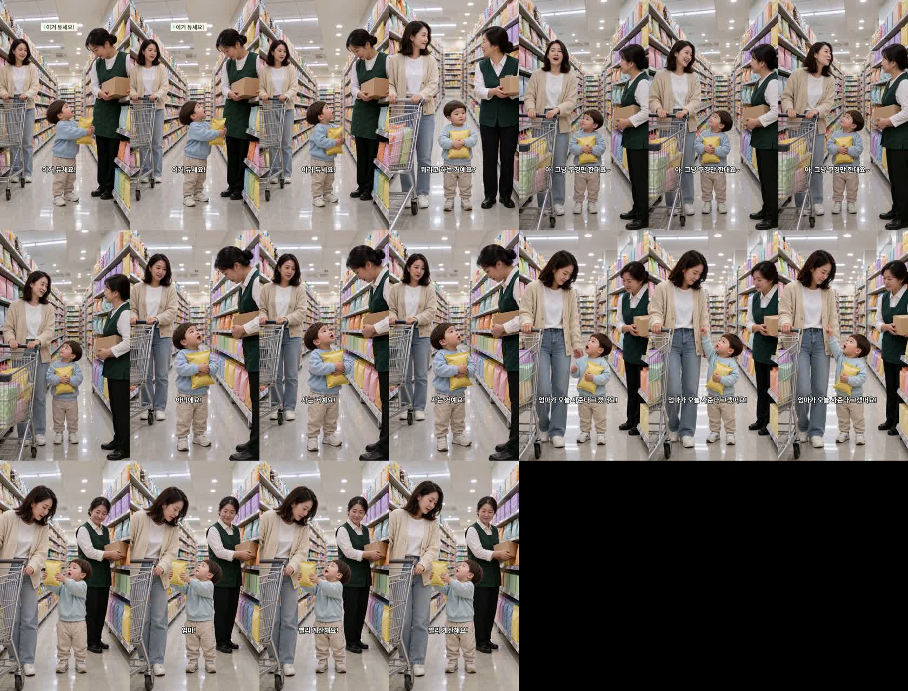
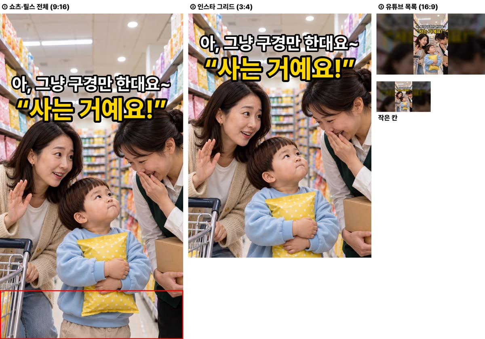

마트 통역 편 완성본 (R4) — 확인 부탁
18.3초 · 6컷 · 정식 Omni · 등록 안 함 — 대표님이 보시고 정하십니다.
제목(안): «마트 직원 이모 앞에서 엄마 말을 고쳐 준 두 살»
소재 출처
인스타 @hyun2bro «아기 옹알이를 해석이 가능한 경지 — 엄마가 통역»(1,301만 재생, 10-03 인스타 육아 릴스 조사)에서 «부모가 아이 말을 통역한다» 장치만 빌렸습니다. 통역이 둘러대기가 되고 아이가 바로잡는 건 우리 각색입니다.
대본
- 도윤 «이거 듀세요!»
- 직원 이모 «뭐라고 하는 거예요?»
- 엄마 «아, 그냥 구경만 한대요~»
- 도윤 «아니에요! 사는 거예요!»
- 도윤 «엄마가 오늘 사준다 그랬떠요!»
- 도윤 «엄마! 빨리 계산해요!»
자체 점검
- 배경: 마트 과자 코너 세트 정본과 같음 · 과자 포장 글자·상표 없음
- 소품: 노란 과자 봉지·은색 카트·직원 상자가 6컷 내내 같음(카페 편 쟁반 차이를 반영해 시작 그림 단계에서 고정)
- 자리: 도윤 가운데 · 엄마 왼쪽 카트 · 직원 오른쪽 선반 — 컷 사이 튀지 않음
- 도윤 목소리 352~500Hz — 전부 경고선(330Hz) 위
- 6컷 첫 판이 컷 안에서 다른 구도로 튀어(자동 검사 적발) 그 컷만 다시 뽑음
대표님이 봐 주셔야 할 것
- H3 가 말을 늦게 시작해서(컷마다 1~2초 대기) 대기를 잘라 냈고, 그래서 전체가 18초로 짧습니다.
- 아기 발음 «듀세요·그랬떠요»가 받아쓰기에서는 «주세요·그랬어요»로 잡혔습니다. 직접 들어 봐 주세요.
1초 간격 전체

썸네일(쇼츠 · 인스타 그리드 · 유튜브 목록)
